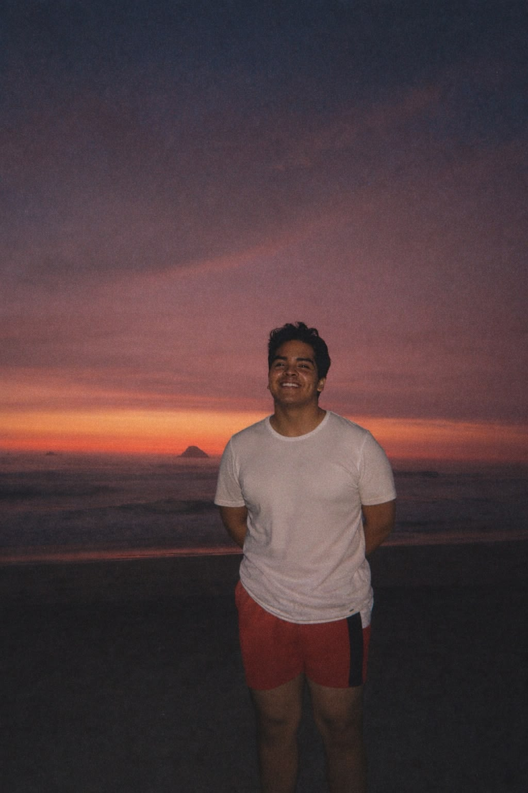

Angelo Fernando Buhytron Tataje
Computer Science specialized in Artificial Intelligence
Correo electrónico
Perfil personal
- LinkedIn: Angelo Fernando Buhytron Tataje
Cursos que estudiamos
- Redacción y Técnicas de Comunicación Efectiva I — Coronel Tello, Ana Eylin
- Métodos de Estudio Universitario — Cosme Félix, Miryam Milagros
- Desarrollo Personal y Liderazgo — Basualdo Porras, Luz
- Cálculo I — Maravi Percca, Edwin
- Álgebra y Geometría Analítica — Terreros Navarro, Hellen Gloria
- Medio Ambiente y Desarrollo Sostenible — Fanola Merino, Petronila Merida
- Introducción a la Computación — Cuadros Vargas, Ernesto
Universidad y facultad
- Universidad: Universidad Nacional Mayor de San Marcos
- Facultad: FISI - UNMSM
Enlaces a otras personas
- Docente de Introducción a la Computación: Ernesto Cuadros Vargas
- Compañero de clase: Angelo Fernando Buhytron Tataje
- Compañero de clase: Gabriel Walde